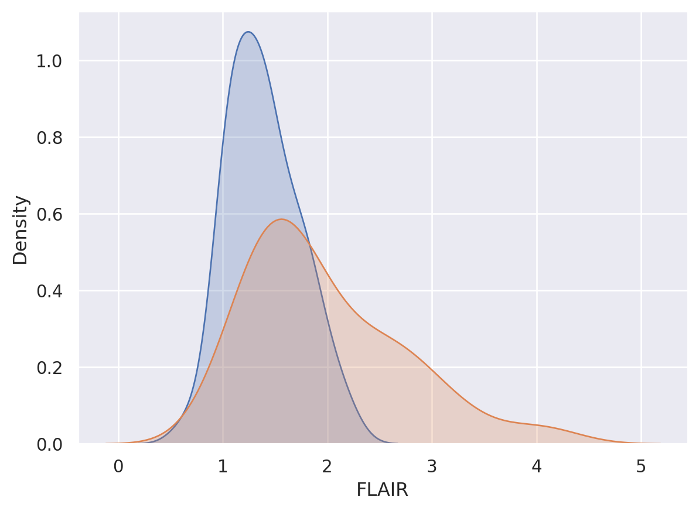
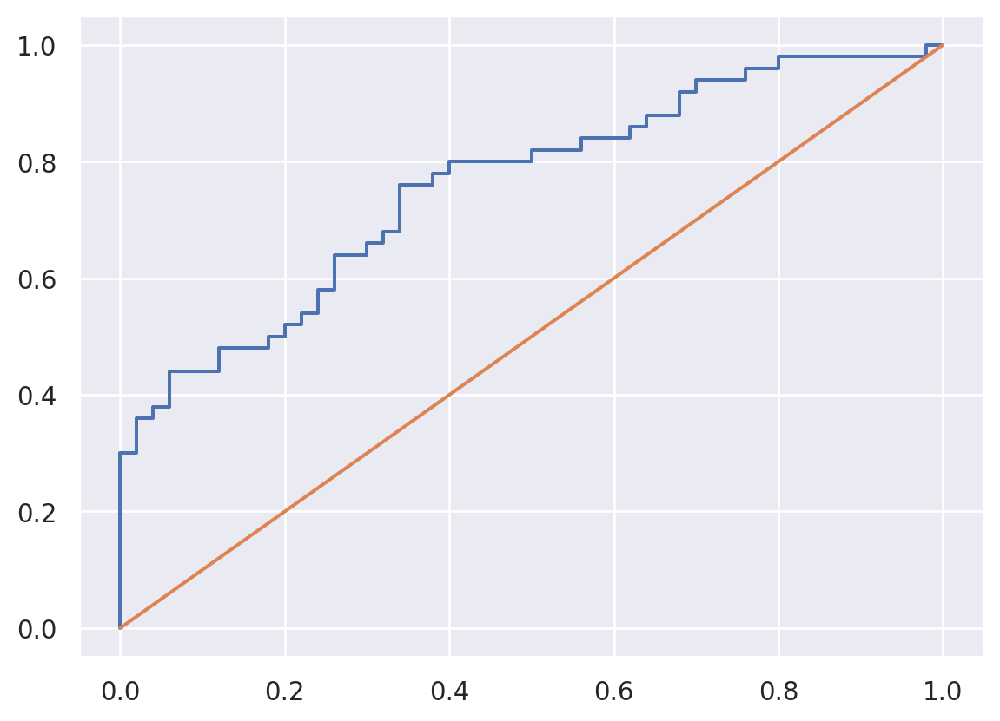
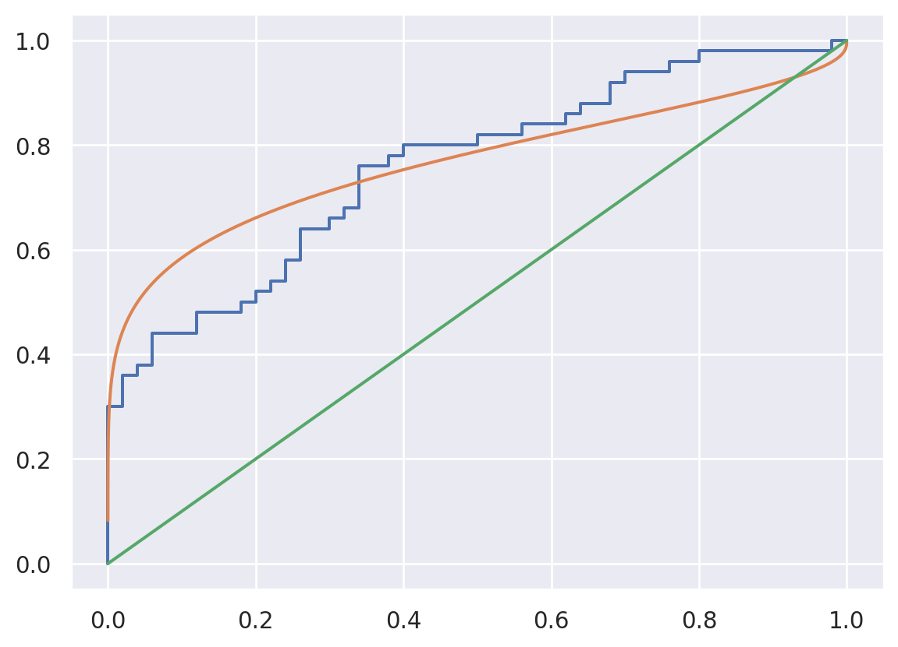
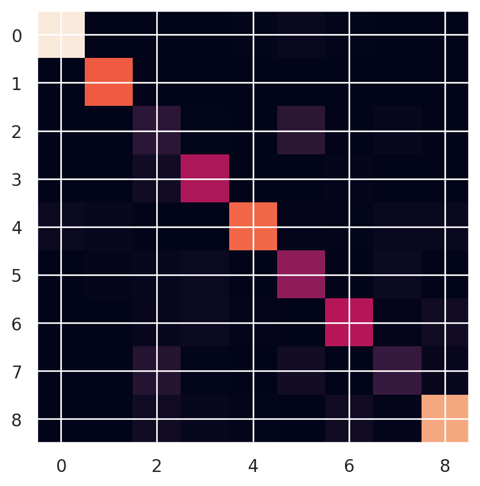
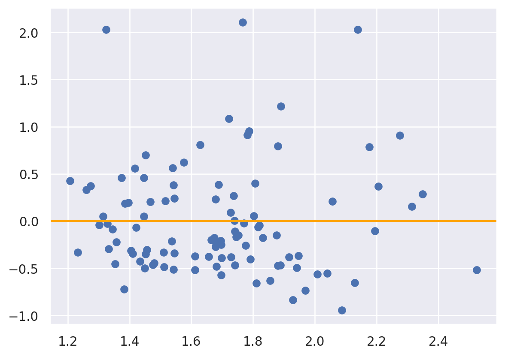

| FLAIR | PD | T1 | T2 | FLAIR_10 | PD_10 | T1_10 | T2_10 | FLAIR_20 | PD_20 | T1_20 | T2_20 | GOLD_Lesions | |
|---|---|---|---|---|---|---|---|---|---|---|---|---|---|
| 0 | 1.143692 | 1.586219 | -0.799859 | 1.634467 | 0.437568 | 0.823800 | -0.002059 | 0.573663 | 0.279832 | 0.548341 | 0.219136 | 0.298662 | 0 |
| 1 | 1.652552 | 1.766672 | -1.250992 | 0.921230 | 0.663037 | 0.880250 | -0.422060 | 0.542597 | 0.422182 | 0.549711 | 0.061573 | 0.280972 | 0 |
| 2 | 1.036099 | 0.262042 | -0.858565 | -0.058211 | -0.044280 | -0.308569 | 0.014766 | -0.256075 | -0.136532 | -0.350905 | 0.020673 | -0.259914 | 0 |
| 3 | 1.037692 | 0.011104 | -1.228796 | -0.470222 | -0.013971 | -0.000498 | -0.395575 | -0.221900 | 0.000807 | -0.003085 | -0.193249 | -0.139284 | 0 |
19 Machine learning validation
20 Basics
When comparing our predictions versus our actual values, there are several considerations. One, is the distinction between agreement and association (Agresti 2003). Agreement implies association but the other direction does not necessarily apply. A Pearson correlation, for example, measures association, since its invariant to any linear transformation of the predictions. In this sense, Pearson correlations do not check to what extent the predictions are calibrated to the response.
In addition, we have several settings worth considering. The outcome could be continuous, multivariate continuous, binary, multi-class (categorical), multi-label, ordinal (ordered categorical) and mixtures of these. The predictions are typically continuous or multivariate continuous. We’ll start by discussing the case where the outcome is binary and the predictions are also binary, for example by binarizing a continuous prediction. However, before we begin, we should discuss testing/training strategies.
20.1 Testing versus training versions
It’s important to emphasize that for each component of validation discussed, there’s a version applied to training data and held out data. Often data is broken into three components
- Training data: data used to train the model.
- validation data: data used to choose hyperparameters, such as layers in a neural network.
- testing data: data used only for final evaluation of the model.
So, in a two class classification problem, there is a training ROC, validation ROC and testing ROC. I would also add testing the model on novel held out datasets, which is a stronger form of validation focusing on generalizability. In addition, different criteria would need to be applied to time series data, where one might differentiate forecasting error from other sorts. Simply holding out random times in a time series dataset is often not enough, since then you would be using the future to predict the past.
Here will focus on the most normal settings and consider different ways to probe for model fit. Some of the strategies are widely used in ML/AI, others are just widely used in more traditional statistical settings.
20.2 Binary outcomes (two-class classification)
Throughout this section, let \(Y\) be the outcome in \(\{0,1\}\), \(X\) be a predictor and \(\hat Y = I(X > c)\) be a binary predictor obtained by thresholding \(X\).
Consider the following definitions for the results of a diagnostic test \(X\in \{0,1\}\), where the actual disease state is \(Y\in \{0,1\}\). Assume 1 represents having/testing for the disease.
- Sensitivity \(P(\hat Y =1 ~|~ Y=1)\), probability that the prediction is positive given the disease is present, also called the true positive rate. \(P(\hat Y =0 ~|~ Y=1)\) (one minus the sensitivity) is the false negative rate.
- Specificity \(P(\hat Y=0 ~|~ Y=0)\), probability that the prediction is negative given the disease is absent, also called the true negative rate. \(P(\hat Y=1~|~ Y=0)\) (one minus the specificity) is the false negative rate.
- PPV, positive predictive value \(P(Y=1 ~|~ \hat Y=1)\).
- NPV, negative predictive value \(P(Y=0 ~|~ \hat Y =0)\).
- DLR+, diagnostic likelihood ratio of a positive prediction \(P(\hat Y=1 ~|~ Y=1) / P(\hat Y=1 ~|~ Y= 0)\) is also the sensitivity over one minus the specificity, i.e. the true positive rate divided by the false positive rate.
- DLR-, diagnostic likelihood ratio of a negative prediction \(P(\hat Y=0) ~|~ Y=1) / P(\hat Y=0 ~|~ Y=0)\) is one minus the sensitivity divided by the specificity or the false negative rate divided by the true negative rate.
- The disease prevalence is \(P(Y=1)\) (and, generally less discussed, the prediction disease prevalance \(P(\hat Y =1)\).)
- The accuracy is \(P(\hat Y = y) = P(\hat Y = 1 ~|~ Y = 1) P(Y = 1) + P(\hat Y = 0 ~|~ Y = 0) P(Y = 0)\), which is the sensitivity times the prevalence plus the specificity times one minus the prevalance.
In a frequency setting with a positive prediction, one might argue that the \(P(Y=1)\) is one or zero depending on whether or not a subject has the disease thus the PPV is either one or zero respectively. However, this is not how these predictions are used. Instead, think of the PPV not as the probability that this subject has the disease, but rather as the probability that subjects like this subject have the disease. For Bayesian interpretations, saying the probability that a subject has the disease is just fine. Either way, it’s fine to use these conditional probabilities (i.e. being Bayesian is more than just the use of Bayes’ rule, its using Bayesian interpretations).
If you have a cross-sectional sample, then all of these quatities are directly estimable. If the data were sampled by case / control status (\(Y=1\) or \(Y=0\)), then \(Y\) is conditioned on by the design and the sensitivity, specificity and DLR+/- are directly estimable. You can obtain the PPV and NPV using Bayes’ rule given a disease prevalance. This is a standard textbook problem. Similarly, in a setting where the design fixes the prediction result, the NPV and PPV would be directly estimable and one would have to use the prevalance of a positive prediction and Bayes’ rule to obtain the sensitivity and specificity. (This sort of design is less usual.)
20.2.1 Basic example
A study comparing the efficacy of HIV tests, reports on an experiment which concluded that HIV antibody tests have a sensitivity of 99.7% and a specificity of 98.5% Suppose that a subject, from a population with a .1% prevalence of HIV, receives a positive test result. What is the positive predictive value?
Mathematically, we want \(P(Y=1 | \hat Y=1)\) given the sensitivity, \(P(\hat Y=1 | Y=1) = .997\), the specificity, \(P(\hat Y=0 | Y=0) =0.985\)$ and the prevalence \(P(Y=1) =0.001\).
\[ \begin{align*} P(Y=1 ~|~ \hat Y =1) & = \frac{P(\hat Y =1 ~|~ Y=1)P(Y=1)}{P(\hat Y=1~|~Y=1)P(Y=1) + P(\hat Y=1 ~|~ Y=0)P(Y=0)}\\ & = \frac{P(\hat Y=1|Y=1)P(Y=1)}{P(\hat Y=1|Y=1)P(Y=1) + {1-P(\hat Y=0 ~|~ Y = 0)}{1 - P(Y=1)}} \\ & = \frac{.997\times .001}{.997 \times .001 + .015 \times .999}\ = .062 \end{align*} \]
In this population a positive test result suggests a 6% probability that the subject has the disease, (the positive predictive value is 6% for this test). If you were wondering how it could be so low for this test, the low positive predictive value is due to low prevalence of disease and the somewhat modest specificity
Suppose it was known that the subject was an intravenous drug user and routinely had intercourse with an HIV infected partner? Our prevalence would change dramatically, thus increasing the PPV. You might wonder if there’s a way to summarize the evidence without appealing to an often unknowable prevalence? Diagnostic likelihood ratios provide this for us.
We have: \[ P(Y = 1 ~|~ \hat Y = 1) = \frac{P(\hat Y=1~|~ Y = 1)P(Y=1)}{P(\hat Y=1)} \]
and
\[ P(Y=0 ~|~ \hat Y=1) = \frac{P(\hat Y=1 ~|~ Y=0)P(Y=0)}{P(\hat Y=1)}. \]
Therefore, dividing these two equations we have:
\[ \frac{P(Y = 0 ~|~ \hat Y=1)}{P(Y=1 ~|~ \hat Y=1)} = \frac{P(X = 1 ~|~ Y=1)}{P(\hat Y = 1 ~|~ Y=0)}\times \frac{P(Y=1)}{P(Y=0)} \]
In other words, the post test odds of disease is the pretest odds of disease times the \(DLR_+\). Similarly, \(DLR_-\) relates the decrease in the odds of the disease after a negative test result to the odds of disease prior to the test. So, the DLRs are the factors by which you multiply your pretest odds to get your post test odds. Thus, if a test has a \(DLR_+\) of 6, regardless of the prevalence of disease, the post test odds is six times that of the pretest odds.
HIV example revisited Let’s reconsider our HIV antibody test again. Suppose a subject has a positive HIV test, \(DLR_+ = .997 / (1 - .985) = 66\). The result of the positive test is that the odds of disease is now 66 times the pretest odds. Or, equivalently, the hypothesis of disease is 66 times more supported by the data than the hypothesis of no disease
Suppose instead that a subject has a negative test result. Then \(DLR_- = (1 - .997) / .985 =.003\) Therefore, the post-test odds of disease is now 0.3% of the pretest odds given the negative test. Or, the hypothesis of disease is supported $\(.003\) times that of the hypothesis of absence of disease given the negative test result
20.2.2 ROC curves
By thresholding \(X\) we are throwing out information in the predicted values. Consider trying to predict lesion status using FLAIR value using the data below.
x = dat.FLAIR
y = dat.GOLD_Lesions
x0 = dat.FLAIR[y == 0]
x1 = dat.FLAIR[y == 1]
sns.kdeplot(x0, shade = True, label = 'Gold Std = 0')
sns.kdeplot(x1, shade = True, label = 'Gold Std = 1')
plt.show()
Consider a given FLAIR threshold, say \(c\). Then the true positive rate given that threshold is \(T(c) = P(X \geq c ~|~ Y=1)\) and the false positive rate is \(F(c) = P(X \geq c~|~ Y=0 )\). Provided continuity, these are like conditional survival functions. (The statement provided continuity is needed, since survival functions are usually defined as \(>\) not \(\geq\) which can differ otherwise). Note, given a specific FPR, \(f\), then the associated threshold would be \(F^{-1}(f)\) and the associated TPR with that threshold would be \(T\{F^{-1}(f)\}\). We say the function \([0,1] \rightarrow [0,1] ; f\rightarrow T\{F^{-1}(f)\}\) is the ROC curve. The ROC curve is typically displayed in the plot: \((f, T\{F^{-1}(f)\})\), or equivalently, the plot of \((F(C), T(C))\) for all \(c\). Of course, an empirical estimate of the ROC curve requires empirical estimates of \(T\) and \(F\).
The ROC curve satisfies:
- Starts at the point (0, 0). This can be seen as \(F(\infty) = 0\) implies \(F^{-1}(0) = \infty\) which implies \(T\{F^{-1}(0)\} = 0\).
- Ends at the point (1, 1). This can be seen as \(F(-\infty) = 1\) imples \(F^{-1}(1) = -\infty\) which implies \(T\{F^{-1}(1) \}= 1\).
- Is monotonic. This can be seen as \(f\) increasing implies \(F^{-1}(f)\) is non-increasing which implies \(T\{F^{-1}(f)\) is non-decreasing.
- A uniformly better ROC curve lies entirely above a worse ROC curve. This follows from 3 and from the interpretation that higher values in the curve mean higher true positive rates for a fixed false positive rate. (Note two ROC curves can cross so that one may not be uniformly better than the other.)
- Is always worse than the discontinuous function (0, 0), (0, 1), (1, 1). This follows from 1-3.
- If \(X \sim U[0,1] \perp Y\) the ROC curve is the identity line from (0, 0) to (1, 1). This follows from \(T(c) = F(c) = 1-c\) for \(c \in [0, 1]\), thus \(F^{-1}(f) = 1 - f\) and hence \(T\{F^{-1}(f)\} = f\).
- The ROC curve is invariant to strictly increasing monotonic transformations. Let \(Z = g(X)\) for \(g\) a strictly monotonic, strictly increasing function. Let \(F_Z\) and \(T_Z\) be the associated true and false positive rates. Note then \(F_z(c) = P(X \geq g^{-1}(c) ~|~ Y = 0)=F(g^{-1}(c))\), \(T_z(c) = T(g^{-1}(c))\) and then \(F^{-1}_z(f) = g\{F^{-1}(f)\}\). Then, the ROC function, \(T_z\{F^{-1}_Z(f) = T \circ g^{-1} \circ g \circ F^{-1}(f) = T\{F^{-1}(f)\}\) where \(\circ\) is composition.
- The ROC curve is an identity line whenever \(X \perp Y\) provided \(X\) is continuous. This follows from 6 and 7, since if i\(X\) follows distibution \(\Phi\) then \(X = \Phi^{-1}(U)\) for \(U ~ U[0,1]\) by the probability integral transform.
- The ROC curve for \(X\) as a test for \(1 - Y\) flips the ROC curve of \(X\) as a test for \(Y\) over the identity line. (This simply reverses \(T\) and \(F\), hence the result.)
20.2.2.1 Estimation
A natural (and consistent) estimate of \(T\) is the conditional distribution function is \[ \hat T(c) = \frac{\sum_{i=1}^n I(x_i \geq c) I(y_i = 1)}{\sum_{i=1}^n I(y_i = 1)} = \frac{1}{|\Gamma|} \sum_{i \in \Gamma} I(x_i \geq c) \] where \(\Gamma = \{i | Y_i = 1\}\). We can estimate \(F\) as \[ \hat F(c) = \frac{\sum_{i=1}^n I(x_i \geq c) I(y_i = 0)}{\sum_{i=1}^n I(y_i = o)} = \frac{1}{|\{1,\ldots,n\}\setminus \Gamma|} \sum_{i \in \{1,\ldots,n\}\setminus \Gamma} I(x_i \geq c) \] where \(\setminus\) is set minus. From a data persepctive, the thresholds can only jump at observed values of \(X\). So, we can construct the plot as follows:
## Add terms at the beginning and the end over the max and under the min
c = np.concatenate( [[ np.min(x) - 1], np.sort(np.unique(x)) , [np.max(x) + 1]])
tpr = [np.mean( (x1 >= citer) ) for citer in c]
fpr = [np.mean( (x0 >= citer) ) for citer in c]
plt.plot(fpr, tpr)
plt.plot([0,1], [0,1])
20.2.2.2 Binormal estimation
We could also assume distributional forms for \(T\) and \(F\) (Pepe 2003). For example, suppose \(X ~|~ Y=y \sim N(\mu_y, \sigma_y^2)\). Then, note if \(\Phi\) is the standard normal distribution function then \(T(c) = 1 - \Phi\{ (c - \mu_1) / \sigma_1 \}\), \(F(c) = 1 - \Phi\{ (c - \mu_0) / \sigma_0 \}\) and \(F^{-1}(f) = \mu_0 + \sigma_0 \Phi^{-1}(1-f)\). Thus, the ROC curve is \[ T\{F^{-1}(f)\} = 1 - \Phi\left\{ \frac{\mu_0 -\mu_1}{\sigma_1} + \frac{\sigma_0}{{\sigma_1}} \Phi^{-1}(1-f) \right\} \] where \(\mu_y\) and \(\sigma_y\) can be estimated from the data. Note if \(\mu_0=\mu_1\) and \(\sigma_0 = \sigma_1\) we get an identity line.
from scipy.stats import norm
mu0, mu1 = np.mean(x0), np.mean(x1)
s0, s1 = np.std(x0), np.std(x1)
c_seq = np.linspace(0, 3, 1000)
fpr_binorm = 1-norm.cdf(c_seq, mu0, s0)
tpr_binorm = 1-norm.cdf(c_seq, mu1, s1)
plt.plot(fpr, tpr)
plt.plot(fpr_binorm, tpr_binorm)
plt.plot([0,1], [0,1])
20.2.2.3 AUC
The area under the ROC curve is given by \[ AUC = \int_0^1 T\{F^{-1}(f)\}df. \] From our earlier results we see that the ideal test has AUC = 1, a completely uniformative test has AUC = 0.5 and an informatively bad test has ROC < 0.5. The AUC has a nice interpretation. Let \(X_1 \sim 1-T\) and \(X_0 \sim 1-F\) independent (i.e. are indepndent random variables generated from those conditional distributions). Let \(g_0 = -F'\) and \(g_1 = -T'\) be the associated density functions. Then we have:
\[ \begin{align*} \int_0^1 T\{F^{-1}(f)\}df & = \int_{-\infty}^{\infty} T(x_0) F'(x_0) dx_0 \\ & = \int_{\infty}^{-\infty} P(X_1 > x_0 ~|~ Y = 1) F'(x_0) dx_0 \\ & = \int_{-\infty}^{\infty} \int_{x_0}^\infty g_1(x_1)g_0(x_0)dx_1 dx_0 \\ & = \int_{-\infty}^{\infty} \int_{-\infty}^\infty I(X_1 > x_0)g_1(x_1)g_0(x_0)dx_1 dx_0 \\ & = \int_{-\infty}^{\infty} \int_{-\infty}^\infty I(X_1 > x_0)g_1(x_1 | x_0)g_0(x_0)dx_1 dx_0 \\ & = E[ E[ I(X_1 > X_0) ~|~ X_0] ] = E[I(X_1 > X_0)] \\ & = P(X_1 > X_0) \end{align*} \] where the first line follows from the transformation \(x_0=F^{-1}(f)\) and hence \(F'(x_0)dx_0 = df\) and \(g_1(x_1|x_0)\) is the conditional distribution which is equal to \(g_1(x_1)\) under independence.
Using this interpretation, we can easily calculate the AUC for the binormal model. \(X_0 - X_1 \sim N(\mu_0 - \mu_1, \sqrt{\sigma_0^2 + \sigma_1^2})\) and therefore
\[ P(X_1 > X_0) = P(X_0 - X_1 < 0) = \Phi \left\{ \frac{\mu_1 - \mu_0}{\sqrt{\sigma_0^2 + \sigma_1^2}}\right\} \]
It can be shown that the Wilcoxon Rank Sum Test is a test of \(AUC=0.5\) (Pepe 2003). However, strong nulls like that typically aren’t useful in ML and AI. Instead, it’s probably preferable to estimate a confidence interval around the AUC using bootstrapping or asymptotics.
In some cases the full AUC isn’t of interest, so a partial AUC can be used. \[ \int_A T\{F^{-1}(f)\}df = P(X_1 > X_0 , X_0 \in A) \] where here \(A\) is a range of the false positive rates that are relevant in the context.
20.2.3 Calibration
We say that the classification probability, \(X \in [0,1]\), is calibrated for outcome, \(Y\), if \(P(Y = 1 ~|~ X = x) = x\). To make the notation more familiar, let \(X=\phi(Z)\) where \(Z\) is a collection of predictors and \(X\) is the output of the algorithm. I like to discuss this relative to the optimal classification probability.
Let \(O(Z) = E[Y ~|~Z]\) be the optimal classification probability and \(\hat Y = I(E[Y~|~Z] > 0.5)\) be the optimal classifier.
One way to look at the optimal classification probability is to consider \(Y\) as a treatment and \(Z\) as confounders. Under this notation, \(O(Z)=P(Y = 1 ~|~ Z)\) is the propensity score (Rosenbaum and Rubin 1983). We can use the propensity score properties to prove interesting things.
- \(O(Z)\) is calibrated.
- \(Y\perp Z ~|~ O(Z)\). That is, the covariates contain no additional information beyond what is contained in \(O(Z)\).
- \(Y \perp Z ~|~ \phi(Z)\) for some other classification prediction probability, \(\phi\) if and only if it is finer than \(O(Z)\).
- A classification probability, \(\phi(Z)\),is calibrated iff \(E[O(Z) ~|~ \phi(Z)]=\phi(Z)\)
Here we say \(a(z)\) is finer than \(b(z)\) and \(b(z)\) is coarser than \(a(z)\) if \(b(z) = f\circ b(z)\) for some \(f\). The word finer is used since \(f\) may not be a bijection. That is, there may exist \(z_1, z_2\) such that \(a(z_1) \neq a(z_2)\) but \(b(z_1)=b(z_2)\). For example, \(z\) could be a scaler, \(a(z) = z\) and \(b(z) = z^2\), the latter of which loses the sign information. It should be clear that if \(a(z)\) is finer than \(b(z)\) then \(P(Y ~|~ a(Z), b(Z)) = P\{Y ~|~ a(z)\}\), since \(b(Z)\) contains no new information that isn’t already present in \(a(z)\). Furthermore \(E[b(Z) ~|~ a(Z)]=b(Z)\) since \(a\) conditions out all of the randomness in \(b\). We can now demonstrate our properties.
For 1. \[ \begin{align*} E[Y ~|~ O(Z)] & = E[E[Y ~|~ Z, O(Z)] ~|~ Z] \\ & = E[E[Y ~|~ Z] ~|~Z] \\ & = E[O(Z) ~|~ Z] = O(Z) \end{align*} \] where, recall \(E[Y ~|~ Z, O(Z)] = O(Z)\) and \(E[O(Z)~|~Z] = O(Z)\) since \(O(Z)\) is coarser than \(Z\).
For 3. The conditional independence, \(Y \perp Z ~|~ \phi(Z)\), is defined as: \[ P\{Y = 1 ~|~ Z, \phi(Z)\} = P\{Y = 1 ~|~ \phi(Z)\} \] or equivalently \[ E[Y ~|~ Z, \phi(Z)] = E[Y ~|~ \phi(Z)] \] Consider a classifier that is finer. Then, \(E[Y ~|~ Z, \phi(Z)] = E[Y ~|~ Z] = O(Z)\) since \(Z\) is finer than \(O(Z)\), we have that the conditional independence holds is equivalent to \[ O(Z) = E[Y ~|~ \phi(Z)]. \]
Then it follows that \(E[Y ~|~ \phi(Z)] = E[ E[Y ~|~ Z, \phi(Z)] ~|~ \phi(Z)]\) which is \(E[ E[Y ~|~ Z] ~|~ \phi(Z)] = E[O(Z) ~|~ \phi(Z)] = O(Z)\).
Consider a classifier that is coarser. So there exists a \(z_1\) and \(z_2\) such that \(O(z_1) \neq O(z_2)\) but \(\phi(z_1) = \phi(z_2)\). Thus, \(O(z_1) = E[Y~|~ Z= z_1] \neq O(z_2) = E[Y ~|~ Z = z_2]\). Recall, \(E[Y ~|~ Z, \phi(Z)]= O(Z)\). Thus \(E[Y ~|~ Z=z_1, \phi(Z) = \phi(z_2)]\) cannot equal \(E[Y ~|~ Z=z_2, \phi(Z) = \phi(Z_2)]\), implying \(Y\) is not conditionally independent of \(Z\) given \(\phi(Z)\).
For 4. \(\phi\) is calibrated iff \(\phi(Z) = E[Y~|~\phi(Z)]\). But \[ E[Y~|~\phi(Z)] = E[E[Y~|~Z, \phi(Z)] ~|~ \phi(Z)] = E[O(Z) ~|~ \phi(Z)]. \]
20.2.4 Agreement
Expected agreement is optimized when threhsolding whether the optimal classification probability is greater than 0.5. That is, the optimal classifier is \[ \hat Y = I\{P(Y=1~|~Z) \geq 0.5\} = I\{O(Z) \geq 0.5\}. \]
Let \(\hat Y\) be any function that binarizes \(Z\). Consider expected agreement, \(E[I(\hat Y = Y)]\), i.e. the probability that the two values agree. \[ \begin{align*} & E[I(\hat Y = Y)] \\ = & E[ I(Y=0)I(\hat Y = 0) + I(Y=1)I(\hat Y = 1)] \\ = & E\{E[I(Y=0)I(\hat Y = 0) + I(Y=1)I(\hat Y = 1) ~|~ Z]\} \\ = & E[\{1 - O(Z)\}I(\hat Y = 0) + O(Z)I(\hat Y = 1)] \\ \leq & E[\{1 - O(Z)\}I\{1-O(z) \geq O(z)\} + O(Z)I\{O(z) \geq 1-O(z)\}] \\ = & E[\{1 - O(Z)\}I\{O(Z) \leq 0.5\} + O(Z)I\{O(z) \geq 0.5\}] \\ \end{align*} \] Thus, if we set \(\hat Y = I\{O(Z) \geq 0.5\}\) we maximize agreement (or equivalently minimize disagreement).
Strong agreement suggests agreement suggests \(Y\) and \(\hat Y\) are equal. Strong agreement implies a weaker marginal agreement that \(E[Y] = E[\hat Y]\). This is the idea of marginal homogeneity. Marginal homomgeneity is weaker than strong agreement, since strong agreement would imply marginal homogeneity but not vice versa.
20.2.4.1 Marginal homogeneity
One question that one could reasonably ask is how well does the fitted data marginals mirror the actual marginals? That is, does \(\pi_{\hat Y} \equiv E[\hat Y] = P(\hat Y = 1)\) equal \(\pi_{Y} \equiv = E[Y] = P(Y = 1)\). This is asking whether the algorithm produces a marginal prevalance of disease equivalent to the observed prevalence of disease.
Consider comparing the two. Let \(n_{jk} = \sum_i I(Y_i = j) I(\hat Y_i = k)\) for \(j,k \in \{0,1\}\). Then, the observed marginal pevalences are \(\hat \pi_y = (n_{10} + n_{11}) / n\) and \(\hat \pi_{\hat Y} = (n_{01} + n_{11}) / n\). It follows (see Agresti 2003) to see that an estimated standard error for \(\hat \pi_y - \hat \pi_{\hat Y}\) is the square root of: \[ \hat{Var}(\hat \pi_y - \hat \pi_{\hat Y}) = \hat \pi_y(1-\hat\pi_y) + \hat\pi_{\hat Y}(1-\hat\pi_{\hat Y}) - 2 (n_{00} n_{11} - n_{01}n_{10})/n. \] The resulting standard error can be used to estimate how close the marginal proportions of disease match up accounting for the matched dependence using asymptotic normality to create confidence intervals. Note that the estimator \(\hat \pi_y - \hat \pi_{\hat Y} = (n_{01} - n_{10}) / n\) only depends on the count of false positives and false negatives. Thus, this estimator can be summarized as asking whether the rate of false positives is equal to the rate of false negatives.
20.2.4.2 Conditional logistic regression
An alternative to marginal agreement is from subject-specific models. The idea here would be to create a model
\[ \mathrm{logit}\{P(Y_i = 1)\} = \alpha_i ~~~ \mathrm{logit}\{P(\hat Y_i = 1)\} = \alpha_i + \beta \]
Here, this suggests that there is a person-specific effect, \(\alpha_i\), and a common calibration error, \(\beta\). Since the space of \(\alpha_i\) grows with the sample size, there is estimation issues from the well known Neyman/Scott phenomena (Neyman and Scott 1948) whereby maximum likelihood estimates can be inconsistent when the parameter space grows with the sample size. Conditional logistic regression avoids this and results in the closed form estimate (Agresti 2003) and standard error:
\[ \hat \beta = \log( n_{01} / n_{10}) ~~~\mbox{and}~~~ \hat \sigma_{\hat \beta} = \sqrt{1/n_{01} + 1 / n_{10} } \]
Thus, conditional logistic regression simply estimates \(\beta\) as the logarithm of the ratio of the number of false negatives to false positives.
20.3 Multi-label and multi-class
Multi-label prediction validation typically follows from two class classification. For example, when trying to ascertain whether there is a dog and a tractor in a pictures, it is reasonable to evaluate the performance of predicting the presence of a dog while separately evaluating predicting the presence of a tractor. The fact that records can have duplicate labels.
Multi-class problems are more direct generalizations of our two class classification problem. Of the two class definitions, the accuracy remains obvioiusly well defined and can be used without modification. One could evaluate the sensitivity and specificity, etc, associated with each class versus not each class. We’ll also show some more model based approaches for evaluating multi-class performance that more completely characterize the agreement, association and performance.
The standard summary of a multi-class output is a confusion matrix. Let’s look at the confusion matrix from the medmnist algorithm.
Using downloaded and verified file: /home/bcaffo/.medmnist/pathmnist.npzUsing downloaded and verified file: /home/bcaffo/.medmnist/pathmnist.npzUsing downloaded and verified file: /home/bcaffo/.medmnist/pathmnist.npzFirst, here are example pathology images.
train_dataset.montage(length=20)/home/bcaffo/miniconda3/envs/ds4bio/lib/python3.10/site-packages/medmnist/utils.py:25: FutureWarning:
`multichannel` is a deprecated argument name for `montage`. It will be removed in version 1.0. Please use `channel_axis` instead.
Here are the different class labels.
info['label']{'0': 'adipose',
'1': 'background',
'2': 'debris',
'3': 'lymphocytes',
'4': 'mucus',
'5': 'smooth muscle',
'6': 'normal colon mucosa',
'7': 'cancer-associated stroma',
'8': 'colorectal adenocarcinoma epithelium'}And here’s a general description of the data and problem.
info['description']'The PathMNIST is based on a prior study for predicting survival from colorectal cancer histology slides, providing a dataset (NCT-CRC-HE-100K) of 100,000 non-overlapping image patches from hematoxylin & eosin stained histological images, and a test dataset (CRC-VAL-HE-7K) of 7,180 image patches from a different clinical center. The dataset is comprised of 9 types of tissues, resulting in a multi-class classification task. We resize the source images of 3×224×224 into 3×28×28, and split NCT-CRC-HE-100K into training and validation set with a ratio of 9:1. The CRC-VAL-HE-7K is treated as the test set.'I ran the algorithm from the MEDMNIST site in the background (code in the quarto document). Here is our testing dataset confusion matrix.
#! cache: true
targets_pred, targets_actual = [], []
for i,t in test_loader:
targets_pred.append(model(i).softmax(dim=-1))
targets_actual.append(t)
targets_pred = torch.cat(targets_pred, dim = 0).detach().numpy().argmax(axis = 1)
targets_actual = torch.cat(targets_actual, dim=0).numpy().squeeze()
from sklearn.metrics import confusion_matrix
cm = confusion_matrix(targets_actual, targets_pred)
print(cm)
plt.imshow(cm);[[1290 0 0 0 8 31 8 0 1]
[ 0 847 0 0 0 0 0 0 0]
[ 0 0 152 9 0 149 0 29 0]
[ 0 0 56 554 0 0 19 3 2]
[ 41 25 1 0 881 13 7 35 32]
[ 3 18 23 40 0 462 0 43 3]
[ 1 0 30 41 14 2 584 11 58]
[ 0 0 131 7 2 61 2 191 27]
[ 0 2 59 24 7 2 57 15 1067]]
We can calculate accuracy easily as the fraction of times that \(\hat Y = Y\).
print(np.round(np.mean( targets_pred == targets_actual ) * 100, 3))
print(len(targets_pred))
print(1 / np.sqrt(len(targets_pred)))83.955
7180
0.011801515411874575So, we’re getting roughly 80% test set accuracy on 7k cases. Since a 95% binomial confidence interval has margin of error (MOE) roughly \(2 \sqrt{p(1-p)/n}\), which is maximized when \(p=1/2\), we get that the margin of error is bounded by \(1/\sqrt{n}\). We show this above and see that the MOE is roughly 1%.
20.3.1 Loglinear models
Poisson loglinear model are often used for modeling contingency tables like confusion matrices. They have a correspondence with the associated multinomial models since if \(X_1,\ldots, X_K \stackrel{indep}{\sim} Poissoin(\{\mu_k\}_k)\) then \(X_1, \ldots, X_k ~|~ \sum_k X_k \sim Multinomial(\{\pi_k\})\) where \(\pi_k = \mu_k / \sum_{k'} \mu_{k'}\).
In our case, let \(n_{jk} = \sum_{i} I(\hat Y_i = i)(Y_i = j)\) be element \((j,k)\) of the confusion matrix. Let \(\pi_{jk}\) be the probabilities from a multinomial model on \(n_{jk}\) and \(\mu_{jk}\) be the means from the associated Poisson model.
Independence is the model that \(\pi_{jk} = \pi_{j+}\pi_{+k}\) where a subscript \(+\) is summing over that index. This implies that \(\hat Y\) is independent of \(Y\). This model rarely holds since our prediction models typically have some performance. The associated Poisson model sets \[
\log(\mu_{jk}) = \alpha + \beta_j + \delta_k
\] In the event that there’s two classes, consider the sensitivity under independence: \[
\pi_{11} / \pi_{+1} = \pi_{1+} \pi_{+1} / \pi_{+1} = \pi_{1+}
\]
And the false positive rate \[
\pi_{10} / \pi_{+0} = \pi_{1+} \pi_{+0} / \pi_{+0} = \pi_{1+}.
\] Thus, under independence the theoretical point of the ROC curve falls on the identity line. Therefore, we can view the multivariate extension of independence as a multivariate model equivalent to a useless test.
A second less useful log-linear model is symmetry. Symmetry assumes \(P(\hat Y = j, Y=k) = P(\hat Y = k, Y=j)\) or \(\pi_{jk}=\pi_{kj}\). As a Poisson loglinear model, it could be satisfied with the loglinear model \[ \log(\mu_{jk}) = \log(\mu_{kj}) = \lambda_{jk} \] for \(j\leq k\).
Note that symmetry implies marginal homogeneity, since \[ \pi_{+k} = \sum_{j} \pi_{jk} = \sum_{j} \pi_{kj} = \pi_{k+}. \] Nonetheless, like independence, symmetry usually is too strict of a model to be useful for confusion matrices.
20.3.1.1 Quasi-independence
A useful deviation from independence is quasi-independence. This model assumes independence in the off-diagonal cells. Specifically, \(P(\hat Y = j, Y = k) = P(\hat Y = j) P(Y = k)\) when \(j\neq k\). As a log-linear model this is specified with \[ \log(\mu_{jk}) = \alpha + \beta_j + \gamma_k + \delta_j I(j = k) \] The \(\delta_j\) terms imply a perfect fit down the diagonal.
20.3.1.1.1 Quasi-symmetry
Quasi-symmetry is a very general model that contains independence, symmetry, quasi-independence and marginal homogeneity as special cases. Quasi-symmetry specifies that \[ \log(\mu_{jk}) = \alpha + \beta_j + \gamma_k + \delta_{jk} ~~~~ \log(\mu_{kj}) = \alpha + \beta_k + \gamma_j + \delta_{jk} \] for \(j\leq k\). The symmetry model holds when \(\alpha=\beta_j = \gamma_k = 0\), the idependence model hols when \(\delta_{jk} = 0\) and quasi-independence holds when \(\delta_{jk} = 0\) for \(j\neq k\). Interestingly,
20.3.1.2 Deviance
The deviance statistic is used to measure model fit. The deviance is specified as \[ D = 2[\log\{P(\mbox{Data} ~|~ \mbox{Sat. model}\} - \log\{P(\mbox{Data} ~|~ \mbox{Model})\}] \] where Sat. standards for saturated model. In our case, a saturated model is just \(\log(\mu_{jk}) = \lambda_{jk}\) so that the fitted confusion matrix is exactly the same as the observed. The difference in deviances between nested models often asympotically follows a chi-squared distribution under the smaller model with degrees of freedom equal to the difference in the number of parameters. (The Poisson log-linear model under the assumption that the counts go to infinity is such a case.)
20.3.1.3 Example
Let’s look at these model fits for our confusion matrix. First, let’s get the data into a dataframe. There are 81 cells and value_counts omits zero counts (which we need).
## This is the confusion matrix data
valdat = pd.DataFrame({'y' : targets_actual, 'yhat' : targets_pred}).value_counts().reset_index().rename(columns = {0 : 'n'})
valdat.head(12)
## There are a ton of values with nothing
## so create a matrix with all of the values
## then we can merge that in and set the missing values to 0
grid = np.array([(x, y) for x in range(n_classes) for y in range(n_classes)])
grid = pd.DataFrame(grid , columns = ['y', 'yhat'])
## Merge in the values with nothting
valdat = valdat.merge(grid,how = "outer").fillna(0)Let’s fit each of these models and compare them.
import statsmodels.api as sm
import statsmodels.formula.api as smf
indep_formula = 'n ~ C(y) + C(yhat)'
mod_indep= smf.glm(formula = indep_formula,
data = valdat,
family = sm.families.Poisson()
).fit()
## The symmetry term is just the concatenated y and yhat in order
valdat['symm'] = np.fmin(valdat['y'], valdat['yhat']).astype(str) + np.fmax(valdat['y'], valdat['yhat']).astype(str)
symm_formula = 'n ~ symm'
mod_symm= smf.glm(formula = symm_formula,
data = valdat,
family = sm.families.Poisson()
).fit()
## This sets the non-diagonal elements as the lowest value
## so when the model fits, that's a reference category and
## it includes terms for every diagonal element.
valdat['indep'] = '0'
diag = valdat['y'] == valdat['yhat']
valdat.loc[diag, 'indep'] = valdat.symm[diag]
quasi_indep_formula = 'n ~ C(y) + C(yhat) + indep'
mod_quasi_indep = smf.glm(formula = quasi_indep_formula,
data = valdat,
family = sm.families.Poisson()
).fit()
## define the model
quasi_symm_formula = 'n ~ C(y) + C(yhat) + symm'
## this is what we would fit if we could
qs_design = smf.glm(formula = quasi_symm_formula,
data = valdat, family = sm.families.Poisson())
## The above doesn't fit for me. So, I grab the design
## matrix from this formula, drop the redundant columns
## and fit directly without the formula
x, d, v = np.linalg.svd(qs_design.exog, 0)
## the correct DF for a QS model is
df_qs = int(1 + 2 * (n_classes - 1) + n_classes * (n_classes - 1) / 2)
x = x[:, 0 : df_qs]
y = valdat['n'].to_numpy()
mod_quasi_symm = sm.GLM(y, x, family = sm.families.Poisson()).fit()
## Note the model DF typically excludes the intercept
print(
pd.DataFrame(
{'models' : ['I', 'S', 'QI', 'QS'],
'deviance' : [mod_indep.deviance, mod_symm.deviance, mod_quasi_indep.deviance, mod_quasi_symm.deviance],
'model df' : [mod_indep.df_model, mod_symm.df_model, mod_quasi_indep.df_model, mod_quasi_symm.df_model],
'resid df': [mod_indep.df_resid, mod_symm.df_resid, mod_quasi_indep.df_resid, mod_quasi_symm.df_resid]
}
)
)
print(
pd.DataFrame(
{'models' : ['S', 'S - QS'],
'deviance' : [mod_symm.deviance, mod_symm.deviance - mod_quasi_symm.deviance],
'model df' : [mod_symm.df_model, mod_quasi_symm.df_model - mod_symm.df_model]
}
)
) models deviance model df resid df
0 I 22463.164035 16 64
1 S 634.422898 44 36
2 QI 1359.774930 25 55
3 QS 298.520707 52 28
models deviance model df
0 S 634.422898 44
1 S - QS 335.902190 8It would appear that none of independence, symmetry or QI fit this data well. The quasi-symmetry model does appear to fit substantially better than the others. Moreover, models that incorporate symmetry seem to be preferable to those that focus on independence.
20.3.1.4 Kappa
Recall the distinction between agreement and association. In a two class problem, a perfect algorithm, where one acidentally switched the labels would have stil perfect association and no agreement.
Kappa measures agreement. Accuracy in our multinomial model is \(\sum_{j} \pi_{jj}\), i.e. the agreement over all of the classes. Contrast this agreement with what one would expect to see under a , \(\pi_{jj} = \pi_{j+}\pi_{+j}\). Thus, the deviation from from independence is \(\sum_{j} \pi_{jj} - \sum_{j} \pi_{j+}\pi_{+j}\). Perfect accuracy accurs when \(\sum_{j} \pi_{jj} = 1\) and thus the Kappa measure is
\[ \kappa = \frac{\sum_{j} \pi_{jj} - \sum_{j} \pi_{j+}\pi_{+j}}{1 - \sum_{j} \pi_{j+}\pi_{+j}} \]
with estimator
\[ \hat \kappa = \frac{\sum_{j} n_{jj} - \sum_{j} n_{j+}n_{+j}/n}{1 - \sum_{j} n_{j+}n_{+j}/n} \]
Here is the kappa score for our pathology example.
sklearn.metrics.cohen_kappa_score(targets_actual, targets_pred)0.8159986513828732A standard error for kappa can be obtained using asymptotic normality from the multinomial (see Agresti 2003, sec. 10.5.4). In addition, one could simply use a bootstrap.
20.4 Prediction
The standard metrics of prediction are mean squared error, correlation and
It’s interesting to note that simply by the calculation of the variance, the theoretical MSE satisfies:
\[ E[(\hat Y - Y)^2] = \mbox{Var}(\hat Y - Y) + (E[\hat Y] - E[Y])^2 \]
Thus, we have that our MSE breaks down into residual variability and bias.
The correlation is a measure of association between \(Y\) and \(\hat Y\).
A useful plot in this scenario is the mean/difference plot where the mean, \((\hat Y + Y)/2\) or the fitted value, \(\hat Y\), is plotted versus the difference, i.e. the residual \(e = (Y - \hat Y)\). Here’s an example using a simple linear regression model of T2 to predict FLAIR.
fit = smf.ols('FLAIR ~ T2', data = dat).fit()
yhat = fit.predict()
e = fit.resid
fig, ax = plt.subplots()
ax.axhline(y = 0, color = "orange");
plt.scatter(yhat, e );
One could test marginal equality of distributions using any statistic, including Wasserstein, Kolmogorov Smirnov, … and swapping prediction / actual labels. Moreover, one could use a rank based statistic in the same way.